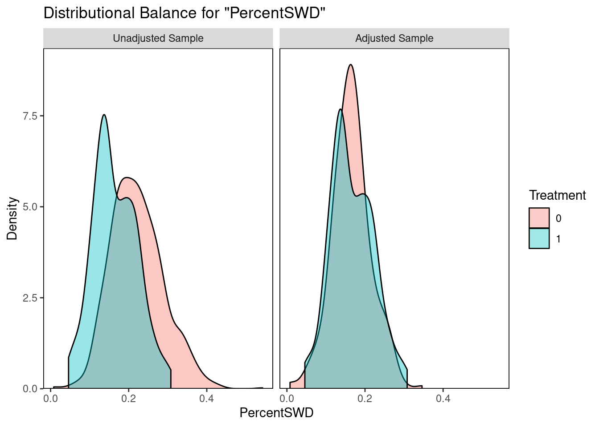
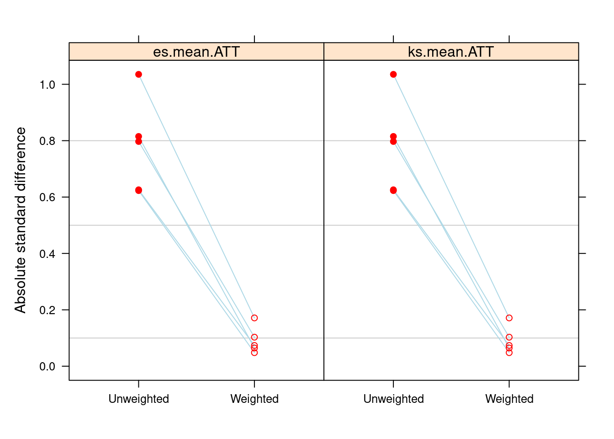

5 Causal Inference
5.0.1 Matching
Given that the groups are imbalanced (GT option schools are more likely to be high income, less SWD, more students), can we balance the groups to get the ATE of the GT option on ELA and MATH scores?
library(MatchIt)
school_nearest <- matchit(treatment ~ PercentBlack + PercentSWD + PercentPoverty + TotalEnrollment +
ENI,
family = binomial(),
data = small,
method = "nearest",
caliper = 0.25,
ratio = 3)
#create the matched set
nearest_matched <- match.data(school_nearest)
library(cobalt)## cobalt (Version 4.3.2, Build Date: 2022-01-19)##
## Attaching package: 'cobalt'## The following object is masked from 'package:MatchIt':
##
## lalondebal.tab(school_nearest, m.threshold = 0.1)## Call
## matchit(formula = treatment ~ PercentBlack + PercentSWD + PercentPoverty +
## TotalEnrollment + ENI, data = small, method = "nearest",
## caliper = 0.25, ratio = 3, family = binomial())
##
## Balance Measures
## Type Diff.Adj M.Threshold
## distance Distance 0.0136 Balanced, <0.1
## PercentBlack Contin. -0.0387 Balanced, <0.1
## PercentSWD Contin. 0.0154 Balanced, <0.1
## PercentPoverty Contin. -0.0666 Balanced, <0.1
## TotalEnrollment Contin. -0.0370 Balanced, <0.1
## ENI Contin. -0.0664 Balanced, <0.1
##
## Balance tally for mean differences
## count
## Balanced, <0.1 6
## Not Balanced, >0.1 0
##
## Variable with the greatest mean difference
## Variable Diff.Adj M.Threshold
## PercentPoverty -0.0666 Balanced, <0.1
##
## Sample sizes
## Control Treated
## All 1009. 101
## Matched (ESS) 256.79 99
## Matched (Unweighted) 280. 99
## Unmatched 729. 2bal.plot(school_nearest, var.name = 'TotalEnrollment', which = "both")
bal.plot(school_nearest, var.name = 'PercentPoverty', which = "both")
bal.plot(school_nearest, var.name = 'PercentBlack', which = "both")
bal.plot(school_nearest, var.name = 'PercentSWD', which = "both")
bal.plot(school_nearest, var.name = 'ENI', which = "both")\[ \begin{align} ELA_scores = \beta_0 +\beta_1GTOption + \epsilon \end{align} \]
#
nearest_matched <- match.data(school_nearest)
model_n <- lm(`3 2019.math` ~ treatment, data = nearest_matched)
summary(model_n)##
## Call:
## lm(formula = `3 2019.math` ~ treatment, data = nearest_matched)
##
## Residuals:
## Min 1Q Median 3Q Max
## -21.4595 -6.4595 -0.4141 6.5405 29.5405
##
## Coefficients:
## Estimate Std. Error t value Pr(>|t|)
## (Intercept) 603.4595 0.6828 883.85 < 2e-16 ***
## treatment 3.9547 1.1564 3.42 0.000719 ***
## ---
## Signif. codes: 0 '***' 0.001 '**' 0.01 '*' 0.05 '.' 0.1 ' ' 1
##
## Residual standard error: 9.287 on 282 degrees of freedom
## (95 observations deleted due to missingness)
## Multiple R-squared: 0.03982, Adjusted R-squared: 0.03642
## F-statistic: 11.69 on 1 and 282 DF, p-value: 0.00071935.0.2 Specification of the PS Model with Machine Learning
5.0.2.1 Tree Approaches: GBM and BART
Without information on the true parametric form of the response surface (i.e. covariates could be related to outcome not linearly), flexible modeling approaches like bart help to account for uncertainty in the data. BART is a sum-of-trees and a regularization prior. BART can be used to fit highly nonlinear response surfaces.
BART can be used to estimate the ATE. First, fit BART to observed data (ELA given Treatment and X). Then make predictions for two datasets. Covariates (X) are intact for both datasets, so BART draws from the posterior distributions of \(E[Y(1) |X] and E[Y(0) |x]\) for each person, as well as \(E[Y(1) - Y(0)|X] and E[Y(0) |x]\). These posterior distributions for individual level treatment effects are then aggregated to obtain posterior distributions of ATE.
school.balance <- bal.table(ps.school.gbm)
plot(ps.school.gbm, plots = 3)
plot(ps.school.gbm, plots = 4)## relative importance plots (relationship between the covariates and the treatment assignment)
summary(ps.school.gbm$gbm.obj,
plot = TRUE)## var rel.inf
## PercentSWD PercentSWD 25.27703
## PercentPoverty PercentPoverty 24.94303
## TotalEnrollment TotalEnrollment 20.19330
## ENI ENI 16.79533
## PercentBlack PercentBlack 12.791315.0.3 Survey Design and IPW for the Outcome Model
### analysis of outcomes, perform the outcome analysis with weights (using the survey package)
small$w <- get.weights(ps.school.gbm, stop.method="es.mean")
design.ps <- svydesign(ids=~1, weights=~w, data=small)
glm1 <- svyglm(as.numeric(`3 2019.math`) ~ treatment, design=design.ps)
summary(glm1)##
## Call:
## svyglm(formula = as.numeric(`3 2019.math`) ~ treatment, design = design.ps)
##
## Survey design:
## svydesign(ids = ~1, weights = ~w, data = small)
##
## Coefficients:
## Estimate Std. Error t value Pr(>|t|)
## (Intercept) 603.5650 0.5256 1148.274 < 2e-16 ***
## treatment 4.3162 1.0648 4.054 5.55e-05 ***
## ---
## Signif. codes: 0 '***' 0.001 '**' 0.01 '*' 0.05 '.' 0.1 ' ' 1
##
## (Dispersion parameter for gaussian family taken to be 97.82262)
##
## Number of Fisher Scoring iterations: 2## increase in MATH scores of 4 points for those in a GT school5.0.4 Doubly Robust Methods
Use both PS adjustment and covariate adjustment for “doubly robust” method. These estimators are consistent if either the PS are estimated correctly or the regression model is specificed correctly. See that there are still differences, despite balancing. So, include other covariates in the outcome model that reduces the SE of the treatment, especially if some of these covaraites are strongly related to the outcome.
## the SE decreasees
glm2 <- svyglm(as.numeric(`3 2019.math`) ~ treatment + PercentSWD, design=design.ps)
summary(glm2)##
## Call:
## svyglm(formula = as.numeric(`3 2019.math`) ~ treatment + PercentSWD,
## design = design.ps)
##
## Survey design:
## svydesign(ids = ~1, weights = ~w, data = small)
##
## Coefficients:
## Estimate Std. Error t value Pr(>|t|)
## (Intercept) 619.7429 1.8877 328.309 <2e-16 ***
## treatment 2.8284 0.8822 3.206 0.0014 **
## PercentSWD -89.3529 9.7375 -9.176 <2e-16 ***
## ---
## Signif. codes: 0 '***' 0.001 '**' 0.01 '*' 0.05 '.' 0.1 ' ' 1
##
## (Dispersion parameter for gaussian family taken to be 68.17794)
##
## Number of Fisher Scoring iterations: 2## we can adjust for more, but these have little effect on the estimated program effect
glm3 <- svyglm(as.numeric(`3 2019.math`) ~ treatment + PercentSWD +
PercentBlack + TotalEnrollment, design=design.ps)
summary(glm3)##
## Call:
## svyglm(formula = as.numeric(`3 2019.math`) ~ treatment + PercentSWD +
## PercentBlack + TotalEnrollment, design = design.ps)
##
## Survey design:
## svydesign(ids = ~1, weights = ~w, data = small)
##
## Coefficients:
## Estimate Std. Error t value Pr(>|t|)
## (Intercept) 625.256657 2.526922 247.438 < 2e-16 ***
## treatment 3.345846 0.842622 3.971 7.83e-05 ***
## PercentSWD -84.127395 9.479015 -8.875 < 2e-16 ***
## PercentBlack -13.432339 2.154439 -6.235 7.45e-10 ***
## TotalEnrollment -0.006088 0.001939 -3.139 0.00176 **
## ---
## Signif. codes: 0 '***' 0.001 '**' 0.01 '*' 0.05 '.' 0.1 ' ' 1
##
## (Dispersion parameter for gaussian family taken to be 58.25097)
##
## Number of Fisher Scoring iterations: 2